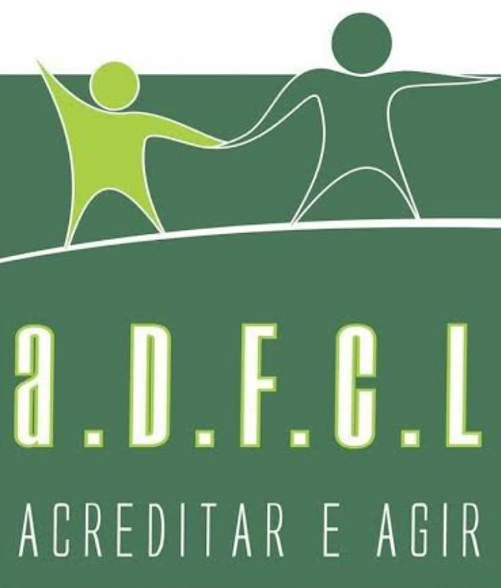

Centro de Convivência da Pessoa Idosa Jerônimo Stoco

Um espaço para interação social, convívio e relacionamento que oferece aulas de artesanato,
música, jogos de mesa, ginástica, além da realização de bailes para a população idosa do
município.
O Centro de Convivência do Idoso Jerônimo Stoco ´Momi´ está situado na rua XV de Novembro,
1882, no centro, e fica aberto de segunda a sexta das 08h às 12h e das 13h às 17h.
Associação Amor Viral
Fundada em 15/04/2015, sem fins lucrativos, de caráter organizacional, filantrópico, assistencial, promocional e educacional, sem cunho político ou partidário, com a finalidade de ofertar assistência, serviços, programas e projetos que auxiliem no desenvolvimento integral das famílias e indivíduos que se encontram em risco de vulnerabilidade social, visando facilitar a transformação da realidade local. Mais de 1500 famílias atendidas.
Acesse o site aqui
Centro Pop
Tem como objetivo ajudar e oferecer um atendimento especializado para pessoas que não tem acesso à uma moradia digna e são obrigadas a sobreviverem nas ruas, tendo seus direitos mais básicos como cidadãos negligenciados. Endereço: R. Constantino Marochi, 340-398 - Lot. Ouro Verde I, Campo Largo - PR.
CRAS Centro de Referência em Assistência Social
São unidades responsáveis pela oferta de serviços de proteção básica do Sistema Único
de Assistência Social, nas áreas de vulnerabilidade e risco social.
CRAS FERRARIA: R. Mato Grosso, 7245, Ferraria
(41) 3649-3326, (41) 3649-3097, (41) 99793-0887
Funcionamento: Seg. à Sex, das 8h às 17:00
CRAS MELIANE: R. Professor Ovídio Jorge Nogueira, 200, Jardim Meliane
(41) 3399-1501, (41) 3292-7434, (41) 99793-0774
Funcionamento: Seg. à Sex, das 8h às 17:00
CRAS POPULAR NOVA: R. Maurício José Lopes, 31, Popular Nova
(41) 3292-2250, (41) 99793-1022
Funcionamento: Seg. à Sex, das 8h às 17:00
CRAS RIVABEM: Rua Ademar de Barros, 1079, Jardim Social
(41) 3392-6388, (41) 3392-3358 (41) 99793-0246
Funcionamento: Seg. à Sex, das 8h às 17:00
CREAS Centro de Referência Especializado em Assistência Social
O CREAS oferece apoio acrianças, adolescentes, jovens, adultos, idosos e mulheres que passaram por
episódios relacionados a violência (psicológica, sexual ou física), tráfico de pessoas, bem como
risco
pessoal e social relacionados a uso de drogas.
Avenida Canal, 533, Cambuí - Telefone: (41) 3291-5124
Associação Reviver
A Associação Reviver presta serviços desde 1995, é uma instituição filantrópica, sem fins
lucrativos, que tem como lema “SALVAR VIDAS”
Tem por finalidade proporcionar triagem ao dependente químico, bem como
encaminhar para comunidades terapêuticas, dar apoio ao seus familiares com o grupo
de autoajuda AMOR PELA VIDA, realizar a reintegração a vida comunitária.
Atendemos pessoas em situação de vulnerabilidade e risco social em razão do uso
abusivo de álcool e outras drogas.
Do sexo feminino e masculino, na faixa etária dos 09 aos 60 anos, por meio de
atendimento individual e em grupos, encaminhando para tratamento em comunidades
terapêuticas.
Rua Quintino Bocaiuva,389–Vila Bancaria–Campo Largo
Grupo de Apoio às Mulheres com Câncer
Grupo nasce a partir de uma experiência de cuidados e de solidariedade entre duas mulheres vítimas
de um tumor maligno.
Informações: (41) 3292- 1765 e (41) 98715-3570 / 99674-2083
Provopar Campo Largo
Provopar é uma associação civil, com personalidade jurídica de direito privado, sem fins econômicos e lucrativos, com a finalidade de assistência social, educacional, beneficente, cultural, ambiental, saúde e geração de renda.